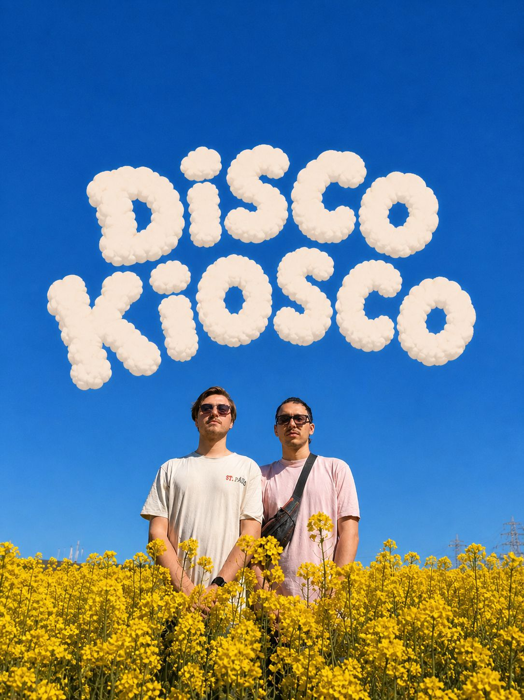
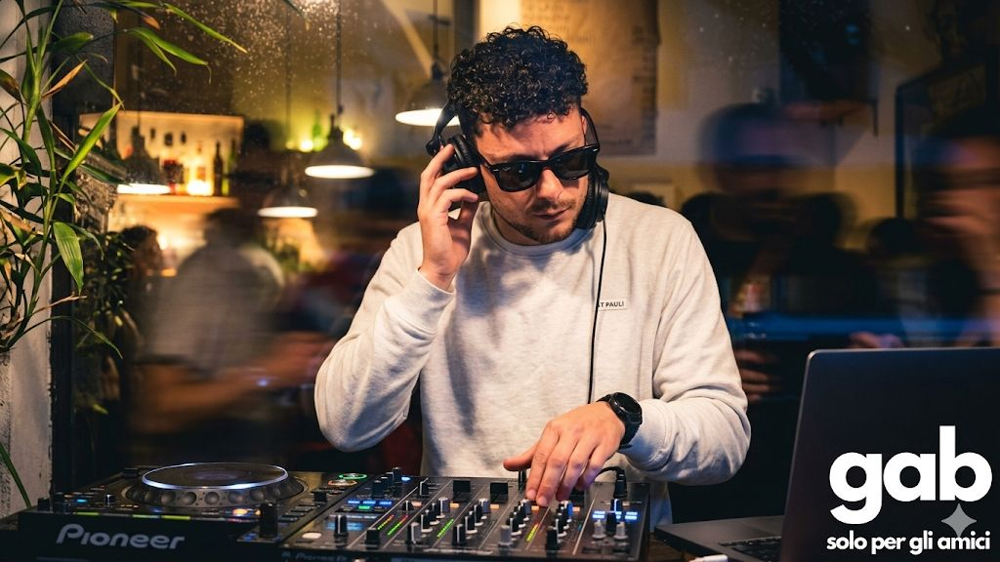
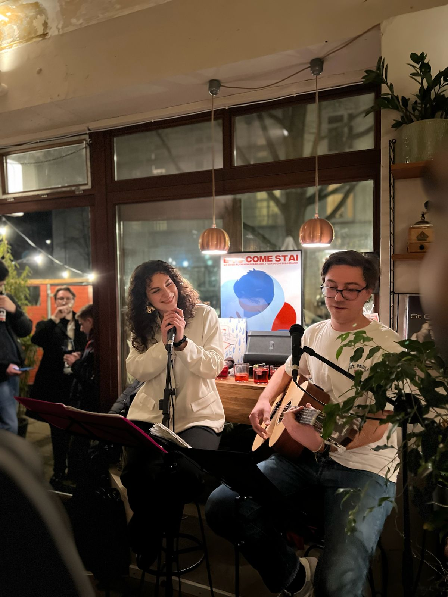
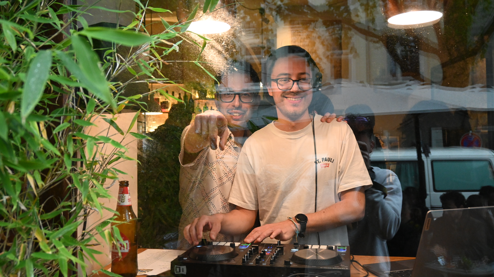

VINILI & AMORE
Hamburg, GermanyItalian groove.
Made to dance.
Vinili & Amore is a wild, vibrant slice of Mediterranean life bursting into Hamburg.
Part aperitivo, part disco-funk fiesta, rooted in curated Italian sound—from Neapolitan funk to timeless Italo disco.
It’s a colorful escape, unpretentious, loud, and full of life, made for genuine warmth and people who love to live fully. The classic Italian afternoon, transformed.
Artist Roots

Ale und Ori
Acoustic journey through great Italian classics. The warm-up while the Spritz is poured.

Disco Kiosco
Relentless dig through Neapolitan funk. The tempo rises and the crowd starts to move.

GABA
Taking the Italian groove and wiring it with heavy modern beats. Pure electronic euphoria.
Our Origins
Four different backgrounds, one massive soul. Bringing the chaotic, beautiful warmth of our hometowns into the heart of Northern Europe.
Manifesto
-
1
From Funk to Madness
The journey is everything. We start with a vintage vinyl record and end up somewhere completely unexpected. A crescendo of groove.
-
2
Unusual Spaces
We transform ordinary places. Courtyards, kiosks, and cafes dressed up in color, becoming temporary Mediterranean escapes.
-
3
Italian Music, Period.
Neapolitan disco, afrobeat, 70s library music, electronic—if it has soul, grooves hard, and comes from Italy, we play it loud.
Upcoming Fiesta
JUN
Amore Festival
Salotto Cafe', Hamburg
Limited Spots · Disco Attire

